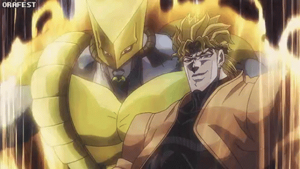
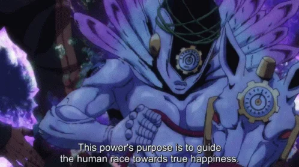

welcome to Jojos bizarre adventure
made in hevan
Enrico Pucci wields the Stand known as Made in Heaven in "JoJo's Bizarre Adventure: Stone Ocean," the sixth story arc in the series. This Stand represents Pucci's ultimate ambitions and plays a crucial role in the climactic events of the arc. Made in Heaven possesses the extraordinary ability of "Time Acceleration," which allows Pucci to speed up the passage of time until it reaches a state of "heaven," ultimately leading to the recreation of the universe according to his desires.The symbolism embedded within Made in Heaven reflects Pucci's nihilistic worldview and his yearning to transcend the limitations imposed by fate and destiny. By accelerating time, Pucci believes he can bring forth a flawless world devoid of suffering and imperfections, firmly believing in the inevitability of fate. As a character who seeks to reshape reality itself, Pucci's Stand serves as a manifestation of his grandiose ambitions and his readiness to sacrifice everything to achieve his objectives.Made in Heaven's design, characterized by its ethereal appearance and celestial motifs, adds to its enigmatic and otherworldly aura. Its presence in "Stone Ocean" intensifies the tension and stakes as the protagonists race against the clock to thwart Pucci and prevent the catastrophic events prophesied by his Stand. As the arc reaches its climax, the true extent of Made in Heaven's power and significance promises to play a pivotal role in resolving the conflict between good and evil.
za world
The Stand known as The World is wielded by Dio Brando, the main antagonist in "JoJo's Bizarre Adventure: Stardust Crusaders." It stands in stark contrast to the protagonist Jotaro Kujo's Stand, Star Platinum, due to its exceptional speed, precision, and strength. The World's key ability, "Time Stop," enables Dio to freeze time momentarily, giving him a considerable advantage in battle by allowing him to strike without opposition while his adversaries are immobilized.The representation of The World mirrors Dio's megalomaniacal aspirations for dominance and authority. Its capacity to control time embodies Dio's fixation on surpassing human limitations and imposing his will on the world. As a character driven by the desire to conquer and reshape reality according to his desires, Dio's Stand embodies his unquenchable ambition and yearning for eternal life.The design of The World, marked by its imposing stature and menacing appearance, perfectly complements its reputation as one of the most iconic and formidable Stands in the series. Its presence in "Stardust Crusaders" heightens the narrative tension and intrigue as Jotaro and his allies confront Dio and his formidable Stand. As the arc nears its climax, the true power and significance of The World are poised to play a crucial role in determining the outcome of the conflict between good and evil.
random facts about jjba
JoJo's Bizarre Adventure, created by Hirohiko Araki, stands as one of the most enduring and influential manga series in Japan. Since its serialization in Weekly Shōnen Jump in 1987, it has been adapted into various forms of media such as anime, video games, and novels. A defining feature of the series is the concept of Stands, supernatural manifestations of characters' fighting spirits, introduced in Part 3, "Stardust Crusaders." Stands play a central role in the series, each possessing unique abilities and designs that often mirror the personality or traits of their users, contributing to the series' combat system. Araki's distinctive art style and storytelling techniques have left a lasting impact on popular culture, inspiring numerous artists, writers, and creators worldwide. His innovative use of fashion, music, and art history in storytelling has garnered him acclaim for his creativity. JoJo's Bizarre Adventure is also known for its extensive musical references, with characters, Stands, and story arcs named after bands, albums, and songs, showcasing Araki's love for music and adding depth to the world-building and character development. The series is structured into multiple story arcs, each following a different protagonist from the Joestar family lineage across various time periods, genres, and locations, creating a multigenerational saga that delves into themes of fate, destiny, and the human condition.
helpful links
 